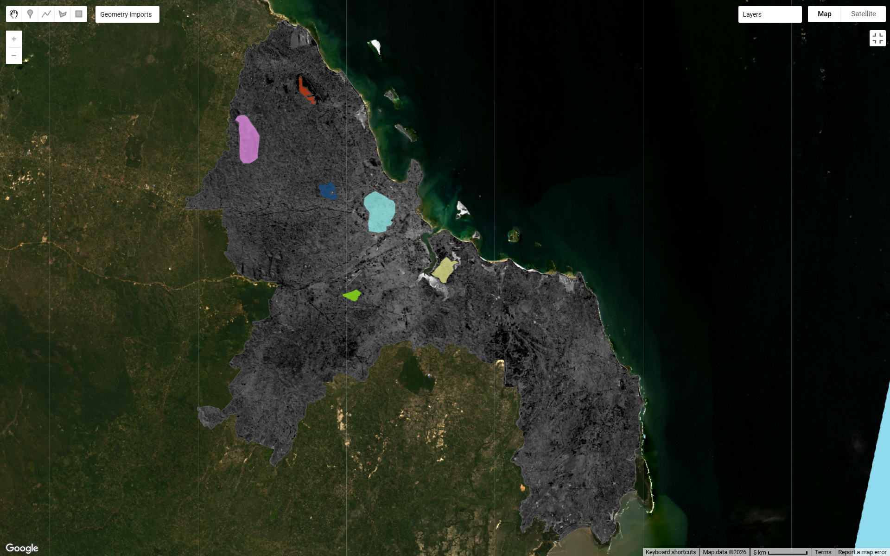
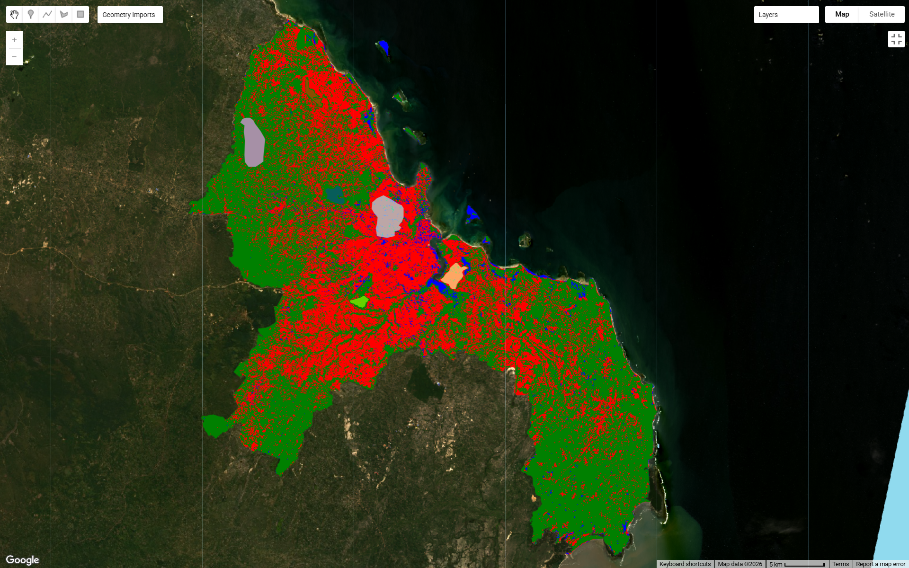
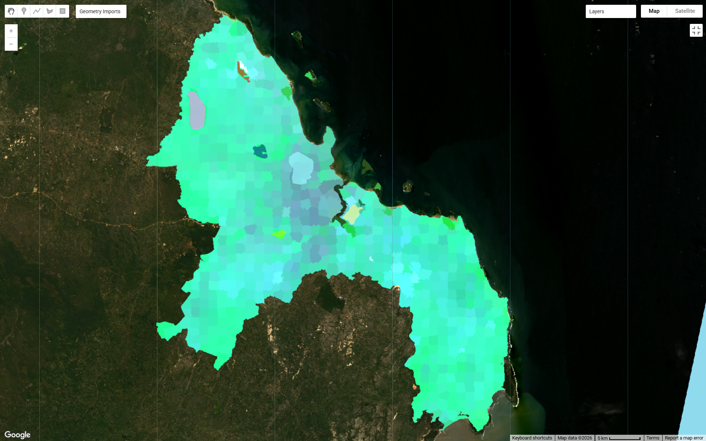
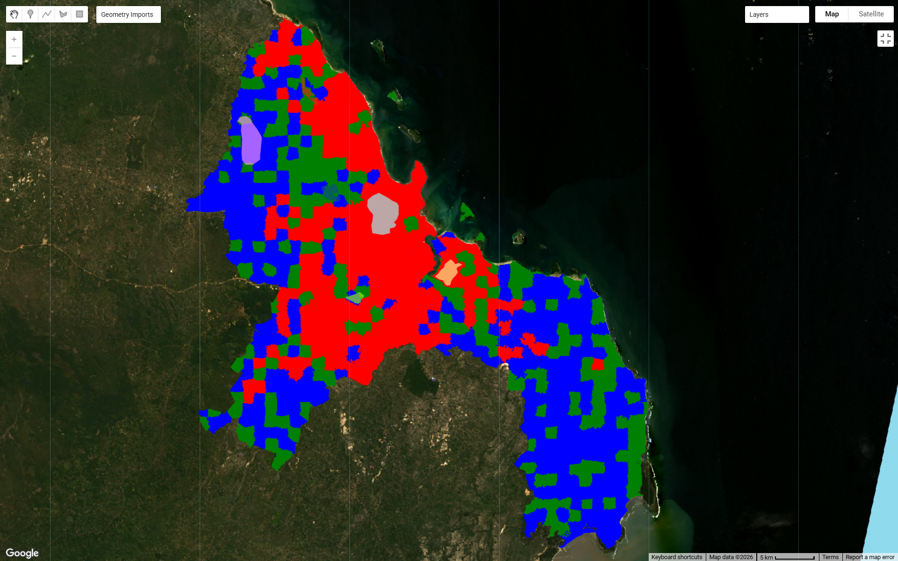

Week 7: Classification II
Summary
This week, I learned advanced approaches in remote sensing image processing, namely sub-pixel classification and Object-Based Image Analysis (OBIA) using Google Earth Engine (GEE). The process began with Landsat 8 (Level 2) image processing, including reflectance scaling, cloud cover filtering, and median composite creation. Next, the image was clipped to the boundaries of the Dar es Salaam study area. The sub-pixel method was applied through spectral unmixing to produce the proportions of urban, vegetation, and water fractions in each pixel. Then, hard classification was performed by selecting the dominant fraction. For the OBIA approach, the image was segmented using the SNIC algorithm, which groups pixels into objects based on spectral and spatial similarities. Finally, object-based classification was performed using the CART (Classification and Regression Tree) algorithm with polygon training data. The final results showed a classification of three main classes: urban (red), vegetation (green), and water (blue), which generally corresponds to the spatial conditions of the study area.
Analysis


The classification results demonstrate a clear difference between pixel-based and object-based approaches. In the spectral unmixing stage, the fraction distribution appears relatively smooth and continuous, reflecting the heterogeneous nature of the surface in urban areas like Dar es Salaam. However, when converted to hard classification, the fraction information is simplified into discrete classes, resulting in a more fragmented and “salt-and-pepper” pattern. The application of SNIC segmentation then successfully grouped pixels into more spatially homogeneous objects, although the segmentation still appears grid-based and does not fully follow the natural boundaries of the landscape. The final OBIA classification results show that urban areas (red) are concentrated in the city center, while vegetation (green) is more dominant in the suburbs, and water (blue) is distributed in coastal areas and internal water bodies. However, some misclassifications remain, such as vegetated areas being classified as urban and vice versa, indicating limitations in spectral representation and the quality of the training data.


These results demonstrate that while the OBIA approach is capable of reducing noise compared to pixel-based classification, the quality of the results is highly dependent on the segmentation parameters and the distribution of the training samples. Overly coarse segmentation results in blocks that are less representative of the actual object shape, while the limited number and variety of training polygons make the model less able to distinguish classes with similar spectral characteristics. In my opinion, this approach still has great potential for improvement, for example by adding more representative training data, optimizing SNIC parameters, or integrating multi-sensor data as suggested in the literature. Furthermore, using only three classes (urban, vegetation, water) may be too simplistic to reflect the complexity of urban areas. Therefore, adding classes such as bare soil or informal settlements could provide more informative and accurate results.
Limitations
First, Landsat 8’s 30-meter spatial resolution results in many mixed pixels, especially in complex urban areas. This limits accuracy at both sub-pixel and OBIA levels. Second, the limited, manually selected training data can potentially lead to classification bias. If polygons are not representative enough or too small, the classifier cannot capture true spectral variations. Second, errors in training area selection (e.g., non-pure areas) can degrade model accuracy. Third, computational limitations in GEE also pose challenges, such as errors related to memory capacity. This forces workflow simplifications, such as using only a few bands for SNIC, which can reduce model performance.
Supporting Studies
Foody (2004) emphasized the importance of sub-pixel methods in addressing the mixed pixel problem, with a spectral unmixing approach that produces continuous fractions rather than discrete classification. This experiment directly implements this concept, where each pixel is decomposed into urban, vegetation, and water components. However, converting from continuous fractions to hard classification can result in the loss of important information, as internal variations within pixels are ignored. Meanwhile, Matarira et al. (2023) demonstrated a more complex implementation of OBIA by combining multiple high-resolution data sources such as Sentinel-1, Sentinel-2, and PlanetScope. Compared to this experiment, which only used Landsat 8, this approach produced higher accuracy and was able to detect more detailed spatial structures, particularly in mapping informal settlements. Therefore, in my opinion, although the OBIA concept used in this experiment is in line with current research, its performance is still limited by data resolution and model complexity.
Future Application
The methods learned in this lab have broad application potential, particularly in urban planning, land use change monitoring, and informal settlement detection. The combination of sub-pixel and OBIA can improve mapping accuracy in heterogeneous areas such as developing cities. In future career prospects as a consultant, I plan to develop techniques that can utilize high-resolution data (e.g., Sentinel-2 or PlanetScope), add more features (texture, vegetation index), and integrate more sophisticated machine learning such as Random Forest or Deep Learning. Furthermore, integration with public policy is also possible, for example in spatial planning or disaster mitigation based on remote sensing data.
Reflection
This practicum provided a deeper understanding of the complexities of image classification, particularly the differences between pixel-based and object-based approaches. Initially, I encountered technical difficulties such as code errors, training geometry selection, and computational limitations. However, the troubleshooting process helped me understand the workflow more deeply. I found the OBIA approach very appealing because it more closely represents the real world than pixel-based classification. On the other hand, I also realized that the quality of the results is highly dependent on the choice of data and parameters. Going forward, these skills will be highly relevant for more complex spatial analyses, especially in urban and environmental contexts.
Reference
Foody, G.M., 2004. Sub-Pixel Methods in Remote Sensing, in: Jong, S.M.D., Meer, F.D.V. der (Eds.), Remote Sensing Image Analysis: Including The Spatial Domain, Remote Sensing and Digital Image Processing. Springer Netherlands, Dordrecht, pp. 37–49 Matarira, D., Mutanga, O., Naidu, M., Vizzari, M., 2023. Object-Based Informal Settlement Mapping in Google Earth Engine Using the Integration of Sentinel-1, Sentinel-2, and PlanetScope Satellite Data. Land 12, 99.